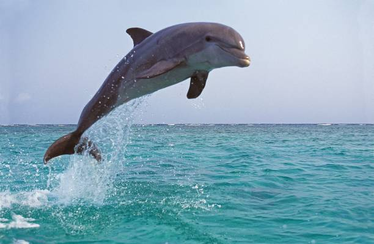
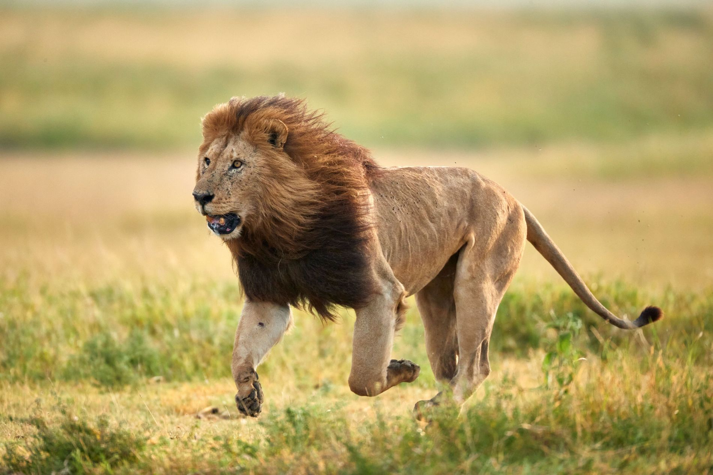
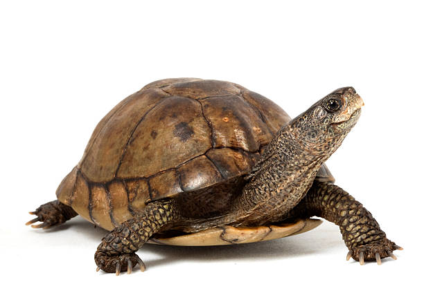

| Nombre | Foto | Descripción | Alimentación |
|---|---|---|---|
| Delfín |  | Mamífero marino muy inteligente y sociable. | Peces y calamares |
| Pez payaso | |
Pez de colores naranjas y blancos que vive en anémonas. | Plancton y algas |
| Tiburón | |
Depredador marino con gran olfato y fuerza. | Peces, focas y crustáceos |
| Nombre | Foto | Descripción | Alimentación |
|---|---|---|---|
| León |  | Felino conocido como el rey de la selva. | Carnívoro |
| Elefante |  |
Animal terrestre más grande, con trompa larga. | Herbívoro |
| Jirafa | Animal de cuello largo que se alimenta de hojas altas. | Herbívoro |
| Nombre | Foto | Descripción | Alimentación |
|---|---|---|---|
| Guacamayo |  |
Loro grande de plumas coloridas. | Frutas y semillas |
| guila | Ave rapaz de gran vista y velocidad. | Carnívora | |
| Flamenco | Ave rosada que vive en lagunas y se alimenta de plancton. | Omnívoro |
| Nombre | Foto | Descripción | Alimentación |
|---|---|---|---|
| Iguana | Reptil verde que disfruta del sol y vive en árboles. | Herbívora | |
| Serpiente pitón |  |
Serpiente grande que mata a sus presas por constricción. | Carnívora |
| Tortuga |  | Reptil con caparazón duro, lento y tranquilo. | Omnívora |